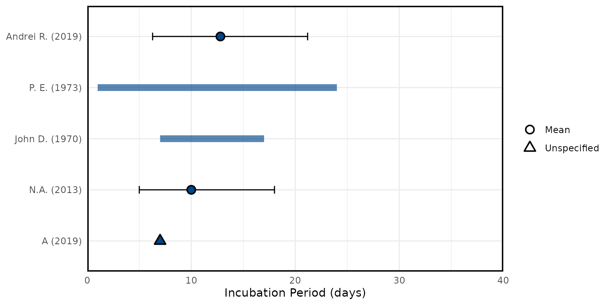
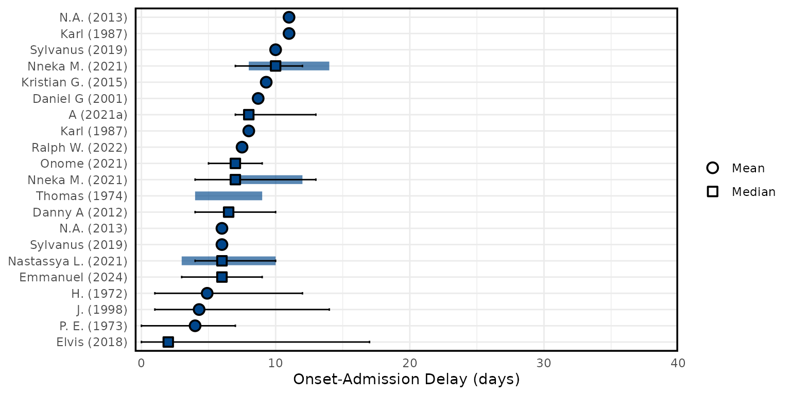
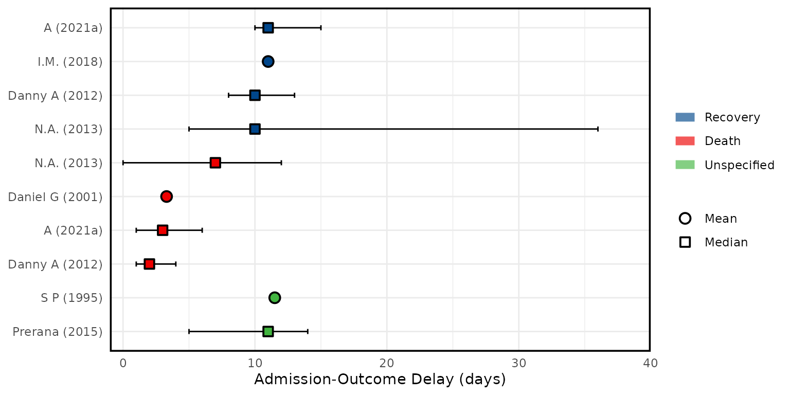

Lassa fever (LASV)
Latest update: 2024-07-24
Source:vignettes/pathogen_lassa.Rmd
pathogen_lassa.RmdIn 2018, the World Health Organization (WHO) published a list of nine known pathogens (in addition to an unknown Pathogen X) for research and development (R&D) prioritisation, due to both their epidemic and pandemic potential and the absence of licensed vaccines or therapeutics. Among these prioritised pathogens is Lassa fever.
The Pathogen Epidemiology Review Group (PERG) has published a systematic review for LASV, if you use any of our results please cite our paper:
@article{, author = {}, year={2024},
title={},
doi = {}, publisher = {Cold Spring Harbor Laboratory Press}, URL = {}, eprint = {}, journal = {medRxiv} }
All Figures from the paper are re-produced below on the latest available data in our data set. For convenience we label the Figures with the same numbers as in the paper.
Figure 1: Please see the pre-print for the the PRISMA flowchart. This will remain static as data in the database is updated.
Seroprevalence
LASV seroprevalence (%) in population and community settings (general population) of West Africa. (A) Mean LASV seroprevalence (%) from studies conducted between 1965 and 1992 (target antibodies not specified in the papers). (B) Mean LASV seroprevalence (%) using IgG assays from studies conducted between 1993 and 2018. Subnational estimates are shown at administrative level 1. Green asterisks show reported LASV outbreak locations and grey areas show absence of estimates. The dotted grey box in panel (A) shows the corresponding area depicted in panel (B).
Figure 2A:

Figure 2B:

Severity
Case fatality ratio (CFR) meta-analyses using logit-transformed proportions and a generalised linear mixed-effects model. (A) CFR estimates by LASV lineage region, inferred from location as reported in each study. (B) Reported geographic distribution of LASV lineages. (C) CFR estimates by country. (D) CFR estimates by total number of reported cases. (E) CFR estimates by population group under study. Red squares show total common and random effects by subgroup and diamonds show an overall common effect estimate, where data are pooled and assumed to come from a single data-generating process with one common CFR, and an overall random effect estimate, which allows the CFR to vary by study and assigns different weights when calculating an overall estimate (appendix section A.3). The number of events corresponds to the number of reported deaths. Individual study estimates and further subgroup decompositions are shown in appendix figures B.5-B.9.
Figure 3A:
Figure 3B:

Figure 3C:
Figure 3D:
Figure 3E:
Delays
Overview of LASV epidemiological delays and mean symptom onset to hospital admission delay meta-analysis. (A) Estimates of the incubation period. (B) Estimates of the symptom onset to hospital admission delay. (C) Estimates of hospital admission to recovery, death, or unspecified outcome delay. (D) Estimates of symptom onset to recovery or death delay. Circles, squares and triangles represent mean, median and unspecified estimates respectively. Thin solid lines are uncertainty intervals and thick shaded lines the range across central estimates of disaggregated parameters (e.g., regions, time, age, sex). (E) Meta-analysis of mean symptom onset to hospital admission delay. Blue squares are individual study estimates and diamonds show common and random effect estimates. Hypothetical symptom onset to hospital admission delay probability distributions are shown in Appendix Figure B.4.
Figure 4A:

Figure 4B:

Figure 4C:

Figure 4D:

Figure 4E:
Transmission Parameters
Overview of LASV (A) reproduction numbers, (B) growth rates, (C) attack rates, (D) percentage human to human transmission contribution, LASV genome (E) evolutionary rates for each protein-encoding gene and, (F) substitution rates for both genome segments. Both E and F are measured in nucleotide substitutions per site per year (s/s/y). Circles and triangles represent mean (panels A and E) and unspecified (panels A-F) estimates respectively. Thin solid lines are uncertainty intervals and thick shaded lines the range across central estimates of disaggregated parameters (e.g., regions, time, age, sex).